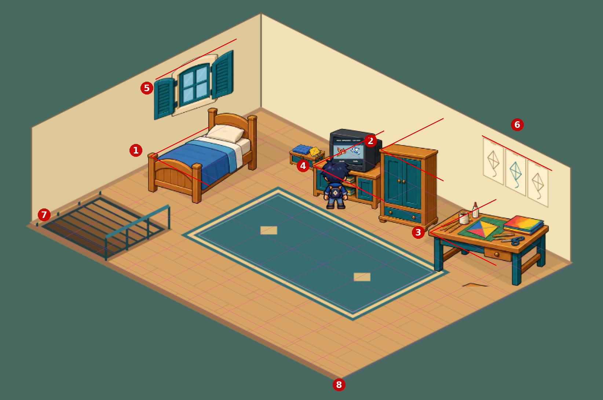
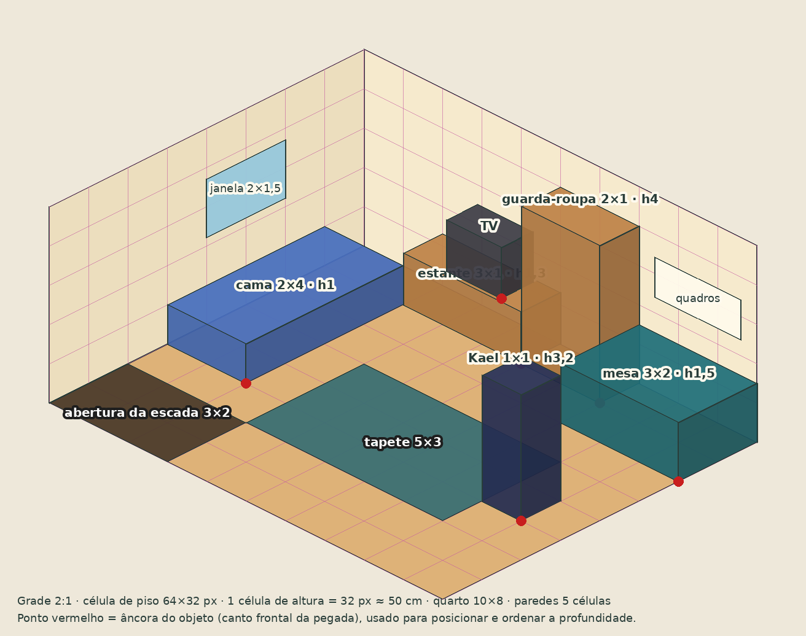

<title>Grade Isométrica PipaKlub</title>
<meta name="claude:viewport-fit-sides" content="cover">
<link rel="preconnect" href="https://fonts.googleapis.com">
<link rel="stylesheet" href="https://fonts.googleapis.com/css2?family=Archivo:wght@500;700;800&family=IBM+Plex+Sans:ital,wght@0,400;0,600;1,400&family=IBM+Plex+Mono:wght@400;600&display=swap">
<style>
/* Especificação técnica de leitura longa: coluna de texto central, figuras na largura toda, tabelas roláveis; grade rosa é a cor-assinatura. */
:root{
 --bg:#f3f5f2;--paper:#ffffff;--fg:#1d2b2a;--muted:#55645f;--line:#d5ddd8;
 --teal:#1f5f63;--grid:#b8378a;--warn:#a35b12;--bad:#b0302a;--ok:#2f7a4f;--chip:#e6efec;
 --display:'Archivo',system-ui,sans-serif;--body:'IBM Plex Sans',system-ui,sans-serif;--mono:'IBM Plex Mono',ui-monospace,monospace}
@media (prefers-color-scheme:dark){:root:not([data-theme="light"]){--bg:#121a19;--paper:#18221f;--fg:#e6ece8;--muted:#9fb0aa;--line:#2c3a36;--teal:#7cc5c4;--grid:#e38ac2;--warn:#e0a35a;--bad:#ef7d74;--ok:#7fca9c;--chip:#20302c;color-scheme:dark}}
:root[data-theme="dark"]{--bg:#121a19;--paper:#18221f;--fg:#e6ece8;--muted:#9fb0aa;--line:#2c3a36;--teal:#7cc5c4;--grid:#e38ac2;--warn:#e0a35a;--bad:#ef7d74;--ok:#7fca9c;--chip:#20302c;color-scheme:dark}
*{box-sizing:border-box}
body{background:var(--bg);color:var(--fg);font:16px/1.65 var(--body);padding-left:max(16px,env(safe-area-inset-left,0px));padding-right:max(16px,env(safe-area-inset-right,0px));padding-block:32px 64px}
main{max-width:860px;margin:0 auto}
h1,h2,h3{font-family:var(--display);line-height:1.2;text-wrap:balance;margin:0}
h1{font-size:clamp(30px,5vw,44px);font-weight:800;letter-spacing:-.01em}
h2{font-size:24px;font-weight:800;margin-top:56px;padding-top:14px;border-top:3px solid var(--grid)}
h3{font-size:18px;font-weight:700;margin-top:28px}
p,li{max-width:68ch}
a{color:var(--teal)}
code,kbd{font-family:var(--mono);font-size:.88em;background:var(--chip);padding:1px 5px;border-radius:4px}
.meta{display:flex;flex-wrap:wrap;gap:8px 16px;color:var(--muted);font-size:14px;margin:10px 0 18px}
.eyebrow{font:600 12px var(--mono);letter-spacing:.12em;text-transform:uppercase;color:var(--grid)}
.lede{font-size:18px}
.summary{background:var(--paper);border:1px solid var(--line);border-radius:10px;padding:18px 20px;margin:20px 0}
.summary ol{margin:8px 0 0;padding-left:22px}
.toc{columns:2 240px;margin:14px 0 0;padding-left:20px;font-size:15px}
figure{margin:20px 0}
figure img{display:block;width:100%;height:auto;border-radius:8px;border:1px solid var(--line);background:#fff}
figcaption{font-size:14px;color:var(--muted);margin-top:8px}
.table{overflow-x:auto;margin:16px 0;border:1px solid var(--line);border-radius:8px;background:var(--paper)}
table{border-collapse:collapse;width:100%;font-size:14.5px;min-width:560px}
th,td{text-align:left;padding:9px 12px;border-bottom:1px solid var(--line);vertical-align:top}
th{font:600 12px var(--mono);letter-spacing:.06em;text-transform:uppercase;color:var(--muted);background:var(--chip)}
tr:last-child td{border-bottom:0}
td.num{font-variant-numeric:tabular-nums;font-family:var(--mono);white-space:nowrap}
.rule{display:grid;grid-template-columns:auto minmax(0,1fr);gap:4px 14px;margin:22px 0;padding:16px 18px;background:var(--paper);border:1px solid var(--line);border-radius:10px}
.rule .id{font:700 15px var(--mono);color:var(--grid);grid-row:span 3}
.rule h3{margin:0;font-size:17px}
.rule p{margin:4px 0}
.check{font-size:14px;color:var(--muted)}
.check b{color:var(--fg)}
.pend{display:inline-block;font:600 11px var(--mono);letter-spacing:.06em;color:var(--warn);border:1px solid var(--warn);border-radius:4px;padding:0 5px;margin-left:6px;vertical-align:2px}
pre{font:13.5px/1.55 var(--mono);background:var(--paper);border:1px solid var(--line);border-radius:8px;padding:14px 16px;overflow-x:auto;white-space:pre}
blockquote{margin:14px 0;padding:12px 16px;border-left:4px solid var(--teal);background:var(--paper);border-radius:0 8px 8px 0;font-size:15px}
.cols{display:grid;grid-template-columns:repeat(auto-fit,minmax(240px,1fr));gap:14px}
.cols>div{min-width:0}
.do,.dont{padding:14px 16px;border-radius:10px;border:1px solid var(--line);background:var(--paper)}
.do h3,.dont h3{margin-top:0;font-size:15px}
.do h3{color:var(--ok)}.dont h3{color:var(--bad)}
.do ul,.dont ul{margin:6px 0 0;padding-left:18px;font-size:15px}
.diagram{background:var(--paper);border:1px solid var(--line);border-radius:10px;padding:14px;overflow-x:auto}
.diagram canvas{display:block;max-width:100%;height:auto;image-rendering:pixelated}
footer{margin-top:56px;font-size:13px;color:var(--muted)}
</style>

<main>
<div class="eyebrow">PipaKlub · Especificação de arte · v1</div>
<h1>Grade isométrica do PipaKlub</h1>
<div class="meta"><span>23/10/2026</span><span>Para: quem desenha ou gera arte (GPT, Codex, artista) e quem integra</span><span>Status: proposta, itens <span class="pend">DECIDIR</span> aguardam aprovação</span></div>

<p class="lede">Como desenhar cômodos, móveis e objetos isométricos para que tudo encaixe na mesma grade, do quarto do Kael ao Parque dos Ventos. O documento nasceu do diagnóstico da primeira prova do quarto, em que cada móvel saiu com um ângulo diferente.</p>

<div class="summary">
 <b>Resumo em cinco regras</b>
 <ol>
  <li>Uma projeção só: <b>2:1</b>. Cada aresta anda 2 px na horizontal para 1 px na vertical; verticais ficam retas.</li>
  <li>Célula de piso de <b>64 × 32 px</b>. Uma célula de altura vale <b>32 px, cerca de 50 cm</b>.</li>
  <li>Tudo em <b>células inteiras</b>, com pegada, altura e <b>âncora</b> declaradas no manifesto.</li>
  <li><b>Uma peça por arquivo</b>, montada pelo jogo na grade. Nunca uma cena inteira pintada de uma vez pelo gerador.</li>
  <li>Toda peça é <b>conferida por sobreposição de grade</b> antes de entrar.</li>
 </ol>
 <ol class="toc" start="1">
  <li><a href="#diagnostico">Diagnóstico do quarto do Kael</a></li>
  <li><a href="#fundamentos">Fundamentos da grade</a></li>
  <li><a href="#regras">Regras de construção</a></li>
  <li><a href="#medidas">Medidas de referência</a></li>
  <li><a href="#producao">Produção com IA</a></li>
  <li><a href="#entrega">Entrega e manifesto</a></li>
  <li><a href="#conferencia">Conferência e reprovação</a></li>
  <li><a href="#integracao">Integração e decisões</a></li>
  <li><a href="#fontes">Fontes</a></li>
 </ol>
</div>

<h2 id="diagnostico">1. Diagnóstico do quarto do Kael</h2>
<p>Sobre a prova enviada, sobrepus uma grade 2:1 ancorada no canto do fundo do piso (rosa) e linhas 2:1 a partir do canto esquerdo de cada móvel (vermelho). Onde a borda do móvel não acompanha a linha vermelha, o móvel foi desenhado com outra câmera.</p>
<figure>
 
 <figcaption>Prova do quarto com a grade 2:1 (rosa) e as referências que cada peça deveria seguir (vermelho). Os números correspondem à tabela.</figcaption>
</figure>
<div class="table"><table>
 <thead><tr><th>#</th><th>Peça</th><th>O que está errado</th><th>Regra</th></tr></thead>
 <tbody>
  <tr><td class="num">1</td><td>Cama</td><td>Girada em relação ao quarto: o pé está mais achatado que 2:1 e a lateral mais íngreme.</td><td>R1, R4</td></tr>
  <tr><td class="num">2</td><td>Guarda-roupa</td><td>Desenhado quase de frente; a borda do tampo é quase horizontal.</td><td>R1</td></tr>
  <tr><td class="num">3</td><td>Mesa de trabalho</td><td>Câmera mais baixa, frente achatada. O tampo invade a linha da parede.</td><td>R1, R5</td></tr>
  <tr><td class="num">4</td><td>Estante, TV e baú</td><td>Quase de frente. O baú flutua atrás da estante, sem contato com o piso.</td><td>R1, R5</td></tr>
  <tr><td class="num">5</td><td>Janela</td><td>Em pé, de frente, em vez de deitada no plano da parede esquerda.</td><td>R6</td></tr>
  <tr><td class="num">6</td><td>Quadros</td><td>Mesmo problema da janela, na parede direita.</td><td>R6</td></tr>
  <tr><td class="num">7</td><td>Escada e corrimão</td><td>Abertura fora da grade, corrimão em outro ângulo.</td><td>R2, R11</td></tr>
  <tr><td class="num">8</td><td>Quarto</td><td>Mede cerca de 10 × 7,4 células: nenhuma medida fecha em células inteiras, nem as tábuas do piso.</td><td>R2</td></tr>
 </tbody>
</table></div>
<p>Também há <b>diferença de escala de pixel</b> entre as peças (guarda-roupa e estante parecem ampliados e borrados) e de espessura de contorno (R7). O piso e as paredes, por outro lado, ficaram entre 26° e 27°, perto do 2:1 correto.</p>
<h3>Por que acontece</h3>
<p>O gerador de imagem monta a cena inteira de uma vez e decide um ângulo para cada objeto. Não existe nele uma grade a respeitar, e pedir "isométrico" não basta: esses modelos costumam entregar o isométrico verdadeiro (30°), alguma perspectiva ou vista de frente, e não o 2:1 usado em jogos. A solução é tirar do gerador a responsabilidade pelo encaixe: ele desenha peças, a grade e o jogo fazem a montagem.</p>

<h2 id="fundamentos">2. Fundamentos da grade</h2>
<h3>Projeção 2:1</h3>
<p>Em pixel art, o isométrico de jogo usa a razão 2:1: a cada 2 pixels na horizontal, a linha sobe ou desce 1. Isso dá um ângulo de <b>26,565°</b> (não 30°) e produz linhas limpas, em degraus regulares de dois pixels. Uma linha de 30° em pixels sai irregular. Essa é a convenção dos guias de pixel art e dos editores de mapa como o Tiled.</p>
<div class="diagram" role="img" aria-label="Losango de 64 por 32 pixels desenhado em pixels, com a borda subindo um pixel a cada dois">
 <canvas id="diamond" width="660" height="340"></canvas>
</div>
<p class="check">Uma célula de 64 × 32 px em escala 10×. Os cantos ficam em (32, 0), (63, 15), (32, 31) e (0, 15); cada degrau da borda tem 2 px de largura e 1 px de altura. Um pixel fora disso cria fendas entre células vizinhas.</p>

<h3>Célula, altura e coordenadas</h3>
<div class="table"><table>
 <thead><tr><th>Medida</th><th>Valor</th><th>Observação</th></tr></thead>
 <tbody>
  <tr><td>Célula de piso</td><td class="num">64 × 32 px</td><td>Escala nativa do cenário (1×). Tamanho mais usado em jogos, com detalhe suficiente para móveis.</td></tr>
  <tr><td>Célula de altura</td><td class="num">32 px</td><td>Um cubo de 1 célula tem 64 px de largura e 64 px de altura total na tela.</td></tr>
  <tr><td>Escala do mundo</td><td class="num">1 célula ≈ 50 cm</td><td>Kael (1,6 m) ≈ 3,2 células de altura, cerca de 102 px.</td></tr>
  <tr><td>Eixo <code>u</code></td><td>desce para a direita</td><td>Ao longo da parede direita (do fundo).</td></tr>
  <tr><td>Eixo <code>v</code></td><td>desce para a esquerda</td><td>Ao longo da parede esquerda.</td></tr>
  <tr><td>Eixo <code>h</code></td><td>para cima</td><td>Altura em células.</td></tr>
 </tbody>
</table></div>
<p>Conversão de uma posição da grade para a tela, com a origem no canto do fundo do piso:</p>
<pre>tela.x = origem.x + (u − v) × 32
tela.y = origem.y + (u + v) × 16 − h × 32</pre>
<p>Fonte em alta resolução é permitida, desde que em <b>múltiplo inteiro</b> da grade: 2× (célula 128 × 64) ou 4× (256 × 128). A redução para 1× é feita por fator inteiro, sem reamostragem fracionária.</p>

<figure>
 
 <figcaption>Chapa-guia do quarto do Kael: 10 × 8 células, paredes de 5, móveis como caixas na pegada e altura corretas, âncoras em vermelho. Serve de referência para o gerador e para a montagem.</figcaption>
</figure>

<h2 id="regras">3. Regras de construção</h2>

<div class="rule"><span class="id">R1</span><h3>Uma projeção só</h3>
<p>Toda aresta que no mundo é horizontal (chão, tampo, rodapé, batente, cama, prateleira) segue a razão 2:1 em uma das duas direções. Arestas verticais ficam exatamente verticais. Proibido: 30°, perspectiva com ponto de fuga, vista de frente, peças "levemente giradas".</p>
<p class="check"><b>Como conferir:</b> uma linha 2:1 a partir de um canto da peça deve acompanhar a borda com desvio de no máximo 1 px a cada 32 px.</p></div>

<div class="rule"><span class="id">R2</span><h3>Medidas em células inteiras</h3>
<p>Cômodos, pegadas de móveis, portas e aberturas usam células inteiras. Meia célula só para objetos pequenos (abajur, vaso, caixa). O padrão do piso (tábuas, ladrilhos) repete em múltiplos da célula.</p>
<p class="check"><b>Como conferir:</b> os cantos do cômodo e de cada pegada caem sobre interseções da grade.</p></div>

<div class="rule"><span class="id">R3</span><h3>Pegada e altura declaradas</h3>
<p>Cada objeto tem pegada <code>u × v</code> (células no chão) e altura <code>h</code>. O desenho preenche essa caixa: não sai dela, nem fica pequeno dentro dela.</p>
<p class="check"><b>Como conferir:</b> a caixa da chapa-guia sobreposta envolve a peça, encostando nos extremos.</p></div>

<div class="rule"><span class="id">R4</span><h3>Âncora no canto frontal da pegada</h3>
<p>A âncora é o canto da pegada mais próximo de quem olha (o ponto mais baixo na tela). Ela posiciona a peça na célula e ordena a profundidade em relação ao personagem, como faz o <code>depthOrder</code> de <code>src/world-isometric.js</code>. Para personagens e objetos de 1 × 1, a âncora é o centro da célula, nos pés.</p>
<p class="check"><b>Como conferir:</b> com o PNG no tamanho exato da R9, a âncora fica em <code>(u × 32, altura do PNG)</code>.</p></div>

<div class="rule"><span class="id">R5</span><h3>Contato com piso e paredes</h3>
<p>Pés e bases tocam a linha do piso. Móvel encostado tem a face de trás exatamente na linha da parede. Nada flutua, nada atravessa parede, nada se apoia "atrás" de outro móvel sem pegada própria.</p>
<p class="check"><b>Como conferir:</b> zero pixels de vão entre base e piso; nenhum pixel do móvel além da linha da parede.</p></div>

<div class="rule"><span class="id">R6</span><h3>Objetos de parede deitados no plano da parede</h3>
<p>Janela, porta, quadro, prateleira e interruptor são paralelogramos: as bordas verticais ficam retas e as horizontais seguem a inclinação 2:1 da parede onde estão. Na parede esquerda, a borda desce para a esquerda; na direita, desce para a direita.</p>
<p class="check"><b>Como conferir:</b> a borda de cima do objeto é paralela ao rodapé daquela parede.</p></div>

<div class="rule"><span class="id">R7</span><h3>Uma escala de pixel e um contorno</h3>
<p>Todas as peças de um cenário saem na mesma escala de pixel. Nenhuma peça é ampliada ou reduzida depois de pronta, a não ser pelo fator inteiro de exportação. Contorno azul-escuro de 1 px (na escala 1×), como em <code>WORLD-ART-DIRECTION.md</code>. Sem desfoque, sem antialias em transparência.</p>
<p class="check"><b>Como conferir:</b> blocos de pixel do mesmo tamanho em todas as peças; contorno com a mesma espessura.</p></div>

<div class="rule"><span class="id">R8</span><h3>Uma luz, sem sombra no chão <span class="pend">DECIDIR</span></h3>
<p>Proposta: luz vinda da esquerda e de cima. Topo mais claro, face esquerda média e face direita mais escura, em todas as peças. A sombra de contato no piso não vai no PNG: o jogo desenha (como o <code>worldShadow</code> atual), para que fique igual em todas as peças e se mova com objetos animados.</p></div>

<div class="rule"><span class="id">R9</span><h3>Tamanho exato do PNG</h3>
<p>O PNG de uma peça tem o tamanho da caixa, sem margem: <b>largura = (u + v) × 32</b> e <b>altura = (u + v) × 16 + h × 32</b>, em 1×. Fundo com transparência real. Se precisar de margem para efeitos, ela é fixa (8 px em cada lado) e declarada no manifesto.</p>
<p class="check"><b>Exemplo:</b> guarda-roupa 2 × 1, altura 4 → 96 × 176 px, âncora em (64, 176).</p></div>

<div class="rule"><span class="id">R10</span><h3>Objetos altos ou compridos em partes</h3>
<p>Quando o personagem pode passar entre partes de um objeto (cama com cabeceira alta, estante comprida, coreto), a peça é dividida em partes com âncora própria (por exemplo, cabeceira e corpo da cama). Assim o Kael pode ficar na frente de uma parte e atrás de outra. A colisão continua no mapa ortogonal, como hoje.</p></div>

<div class="rule"><span class="id">R11</span><h3>Aberturas e escadas</h3>
<p>Abertura no piso (escada) ocupa células inteiras e é recortada na casca do cômodo, não desenhada por cima. Corrimão é uma peça própria, com pegada de 1 célula de profundidade, seguindo a R1.</p></div>

<div class="rule"><span class="id">R12</span><h3>Personagens na mesma escala</h3>
<p>Personagem ocupa 1 × 1 célula, com os pés no centro da célula. Kael tem cerca de 3,2 células (cerca de 102 px em 1×). Os sprites direcionais seguem as mesmas quatro diagonais da grade.</p></div>

<h2 id="medidas">4. Medidas de referência</h2>
<p>Valores de partida para o quarto e a casa do Kael. Pegada em células <code>u × v</code>; altura em células (1 célula ≈ 50 cm).</p>
<div class="table"><table>
 <thead><tr><th>Item</th><th>Pegada</th><th>Altura</th><th>PNG em 1× (L × A)</th><th>Âncora</th></tr></thead>
 <tbody>
  <tr><td>Quarto do Kael <span class="pend">DECIDIR</span></td><td class="num">10 × 8</td><td class="num">5 (paredes)</td><td class="num">576 × 448</td><td>canto da frente do piso</td></tr>
  <tr><td>Cama de solteiro</td><td class="num">2 × 4</td><td class="num">1 (cabeceira 2)</td><td class="num">192 × 160</td><td class="num">(64, 160)</td></tr>
  <tr><td>Estante de TV</td><td class="num">3 × 1</td><td class="num">1,3</td><td class="num">128 × 106</td><td class="num">(96, 106)</td></tr>
  <tr><td>TV de tubo (sobre a estante)</td><td class="num">1,5 × 1</td><td class="num">1,3</td><td class="num">80 × 82</td><td>apoiada a 1,3 de altura</td></tr>
  <tr><td>Guarda-roupa</td><td class="num">2 × 1</td><td class="num">4</td><td class="num">96 × 176</td><td class="num">(64, 176)</td></tr>
  <tr><td>Mesa de trabalho</td><td class="num">3 × 2</td><td class="num">1,5</td><td class="num">160 × 128</td><td class="num">(96, 128)</td></tr>
  <tr><td>Cadeira</td><td class="num">1 × 1</td><td class="num">2</td><td class="num">64 × 96</td><td class="num">(32, 96)</td></tr>
  <tr><td>Tapete</td><td class="num">5 × 3</td><td class="num">0</td><td class="num">256 × 128</td><td class="num">(160, 128)</td></tr>
  <tr><td>Porta</td><td>2 de largura</td><td class="num">4</td><td>na parede (R6)</td><td>base no rodapé</td></tr>
  <tr><td>Janela</td><td>2 × 1,5</td><td>base a 2 do piso</td><td>na parede (R6)</td><td>—</td></tr>
  <tr><td>Abertura da escada</td><td class="num">3 × 2</td><td>—</td><td>recorte na casca</td><td>—</td></tr>
  <tr><td>Kael e personagens</td><td class="num">1 × 1</td><td class="num">≈ 3,2</td><td>sprite atual</td><td>pés no centro da célula</td></tr>
 </tbody>
</table></div>
<p class="check">Alturas fracionárias (1,3; 1,5) entram no cálculo do PNG com arredondamento para pixel inteiro.</p>

<h2 id="producao">5. Produção com IA</h2>
<h3>Montar por peças</h3>
<ol>
 <li><b>Casca do cômodo.</b> Piso, paredes e rodapé vazios, sem móveis, sobre a <a href="chapa-guia-vazia.png">chapa-guia vazia</a>. Aberturas (escada, porta) já recortadas.</li>
 <li><b>Cada móvel em um PNG transparente.</b> Um pedido por peça, com pegada e altura da tabela, e a caixa da peça recortada da chapa-guia como imagem de referência. O gerador copia o ângulo da caixa.</li>
 <li><b>Objetos de parede</b> também separados, já deitados no plano da parede certa (R6).</li>
 <li><b>Redução e recorte.</b> Fonte em 2× ou 4×, reduzida por fator inteiro. O PNG final fica no tamanho da R9.</li>
 <li><b>Conferência</b> de cada peça (seção 7) antes de seguir.</li>
 <li><b>Montagem pelo jogo ou pelo Tiled</b>, com a âncora de cada peça na célula da planta. A cena final nunca é uma imagem única pintada pelo gerador.</li>
</ol>
<div class="cols">
 <div class="do"><h3>Fazer</h3><ul><li>Uma peça por pedido, sempre com a caixa de referência.</li><li>Pedir "dimétrica 2:1, 26,57°" com as medidas em pixels.</li><li>Mesmo modelo e mesmo estilo para o conjunto inteiro.</li><li>Guardar prompt, referência e versão de cada peça.</li></ul></div>
 <div class="dont"><h3>Não fazer</h3><ul><li>Pedir o quarto inteiro mobiliado numa imagem só.</li><li>Aceitar "isométrico" sem conferir o ângulo.</li><li>Ampliar ou encolher uma peça para "caber".</li><li>Desenhar sombra no chão dentro do PNG.</li></ul></div>
</div>

<h3>Modelos de pedido</h3>
<p><b>Móvel</b> (troque objeto, pegada e altura):</p>
<blockquote>Pixel art de jogo, projeção dimétrica 2:1 (cada aresta horizontal sobe 1 px a cada 2 px, cerca de 26,57°; arestas verticais retas; sem perspectiva, sem 30°, sem vista de frente). Um único objeto: <b>guarda-roupa de madeira mel com portas azul-petróleo</b>, pegada de <b>2 × 1 células</b> e altura de <b>4 células</b>, onde cada célula do piso é um losango de 64 × 32 px e cada célula de altura mede 32 px. Encaixe exatamente na caixa da imagem de referência: mesmo ângulo, mesma largura, mesma altura, face de trás encostada na linha da parede. Fundo transparente, sem piso, sem sombra no chão, sem outros objetos. Contorno azul-escuro de 1 px, luz da esquerda (topo claro, face esquerda média, face direita escura). Paleta do jogo: reboco creme, terracota, azul-petróleo, madeira mel.</blockquote>
<p><b>Objeto de parede:</b></p>
<blockquote>Mesma projeção dimétrica 2:1. Uma <b>janela com venezianas azul-petróleo</b> na <b>parede esquerda</b>: 2 células de largura por 1,5 de altura, desenhada deitada no plano da parede, com as bordas verticais retas e as bordas horizontais descendo para a esquerda na razão 2:1, paralelas ao rodapé. Fundo transparente, sem a parede.</blockquote>
<p><b>Casca do cômodo:</b></p>
<blockquote>Mesma projeção dimétrica 2:1. Quarto vazio de <b>10 × 8 células</b> (losango de 64 × 32 px por célula), paredes de <b>5 células</b> de altura (160 px), piso de tábuas alinhadas à grade, rodapé e cantos sobre a grade da imagem de referência. Sem móveis, sem personagens, sem janelas. Abertura da escada de 3 × 2 células no canto frontal esquerdo.</blockquote>

<h2 id="entrega">6. Entrega e manifesto</h2>
<p>Cada cenário vai para <code>assets/world/&lt;cenario&gt;/</code>, com fontes e prompts na pasta de autoria em <code>art/</code>, como nos kits atuais.</p>
<pre>assets/world/kael-quarto-iso-v1/
  casca.png            piso e paredes vazios (576 × 448 em 1×)
  cama.png  guarda-roupa.png  mesa.png  estante.png  tv.png  tapete.png
  janela.png  quadros.png  corrimao.png
  manifest.json        pegada, altura, âncora e posição de cada peça
art/kael-quarto-iso-v1/
  fontes/  prompts.json  revisao-grade.png</pre>
<p>Cada peça no manifesto:</p>
<pre>{
  "grid": {"cell": [64, 32], "height": 32, "scale": 1},
  "room": {"cells": [10, 8], "wall": 5, "image": "casca.png", "origin": [288, 160]},
  "pieces": {
    "guarda-roupa": {
      "image": "guarda-roupa.png", "size": [96, 176],
      "footprint": [2, 1], "height": 4, "anchor": [64, 176],
      "cell": [7, 1],
      "wall": "direita", "rulesVersion": "grade-iso-1"
    }
  }
}</pre>
<p class="check"><code>cell</code> é a célula onde fica a âncora (o canto frontal da pegada) e <code>origin</code> é a posição do canto do fundo do piso dentro de <code>casca.png</code>. Com isso o jogo posiciona a peça e calcula a profundidade sem ajuste manual.</p>

<h2 id="conferencia">7. Conferência e reprovação</h2>
<p>A conferência é feita com a grade sobreposta (o script <code>art/grade-isometrica/chapa_guia.py</code> gera as chapas). Uma peça é <b>reprovada</b> quando:</p>
<div class="table"><table>
 <thead><tr><th>Critério</th><th>Limite</th></tr></thead>
 <tbody>
  <tr><td>Desvio de uma aresta em relação à razão 2:1</td><td class="num">&gt; 1 px a cada 32 px</td></tr>
  <tr><td>Aresta vertical inclinada</td><td class="num">&gt; 0 px</td></tr>
  <tr><td>Tamanho do PNG diferente da R9</td><td class="num">qualquer diferença não declarada</td></tr>
  <tr><td>Âncora fora da posição calculada</td><td class="num">&gt; 1 px</td></tr>
  <tr><td>Vão entre base e piso, ou peça atravessando parede</td><td class="num">&gt; 0 px</td></tr>
  <tr><td>Escala de pixel ou espessura de contorno diferente do conjunto</td><td>qualquer</td></tr>
  <tr><td>Transparência falsa (fundo xadrez ou branco), halo ou sombra no chão</td><td>qualquer</td></tr>
  <tr><td>Luz em direção diferente das outras peças</td><td>qualquer</td></tr>
 </tbody>
</table></div>
<p>Depois da montagem, conferir a cena em 1280 × 720 e no celular, com o Kael andando entre os móveis: ele precisa passar na frente e atrás de cada peça na ordem certa.</p>

<h2 id="integracao">8. Integração e decisões</h2>
<h3>Projeção no código <span class="pend">DECIDIR</span></h3>
<p>Hoje <code>src/world-isometric.js</code> projeta com <code>toIso = ((x − y) × 0,82 , (x + y) × 0,41)</code>. A razão é 2:1, mas um tile de 32 do mapa vira um losango de <b>52,48 × 26,24 px</b>: não cai em pixel inteiro, borra pixel art e não casa com arte em 64 × 32.</p>
<div class="table"><table>
 <thead><tr><th>Opção</th><th>Efeito</th><th>Custo</th></tr></thead>
 <tbody>
  <tr><td><b>A · recomendada:</b> projeção <code>((x − y) × 1 , (x + y) × 0,5)</code></td><td>Tile de 32 vira exatamente 64 × 32. Arte nova segue esta especificação sem conversão.</td><td>Rever a escala do Parque dos Ventos, publicado com 0,82.</td></tr>
  <tr><td>B · manter 0,82</td><td>Nada muda no parque.</td><td>Célula de arte de 52 × 26, fracionária no jogo; pior para pixel art.</td></tr>
 </tbody>
</table></div>
<p>Em qualquer opção, colisões, saves e caminhos continuam no mapa ortogonal do Tiled, como hoje. A grade de arte define só onde e como cada peça é desenhada.</p>
<h3>Outras decisões pendentes</h3>
<ul>
 <li>Tamanho do quarto do Kael: proposta de 10 × 8 células e paredes de 5.</li>
 <li>Direção da luz: proposta pela esquerda.</li>
 <li>Escala de exportação: 1× com fonte em 4× (proposta) ou 2×.</li>
 <li>Se a casa do Kael da abertura (hoje pintada de cima, em <code>story/kael-birthday-v1</code>) também passa para a grade isométrica, para unificar abertura e revisita.</li>
</ul>

<h2 id="fontes">9. Fontes</h2>
<ul>
 <li>Razão 2:1, ângulo de 26,565° e tamanhos de célula: <a href="https://slynyrd.com/blog/2022/11/28/pixelblog-41-isometric-pixel-art">Slynyrd, Pixelblog 41</a>, <a href="https://www.sprite-ai.art/guides/isometric-pixel-art">Sprite-AI</a>, <a href="https://www.construct.net/en/tutorials/creating-isometric-pixel-art-355/page-6">Construct, pixel art isométrica</a>, <a href="https://tips.clip-studio.com/fr-fr/articles/4969?org=1">Clip Studio, quarto e loja isométricos</a>.</li>
 <li>Pegada, âncora e ordem de profundidade: <a href="https://construct.net/en/tutorials/isometric-games-object-layer-1321">Construct, ordem de objetos</a>, <a href="https://discourse.mapeditor.org/t/isometric-depth-sorting/736/2">fórum do Tiled</a>, <a href="https://forum.godotengine.org/t/alternatives-to-y-sort-or-better-workflow-for-2d-depth-sorting-of-many-objects/133561">fórum do Godot</a>.</li>
 <li>Tiled isométrico: <a href="https://thorbjorn.itch.io/tiled/devlog/120663/tinting-alignment-and-object-references">devlog do Tiled (alinhamento de objetos)</a>, <a href="https://discourse.mapeditor.org/t/problem-aligning-tiles-in-an-isometric-map/989">fórum do Tiled (altura do tile)</a>.</li>
 <li>IA com grade: <a href="https://www.scenario.com/blog/build-isometric-game-tiles-with-ai">Scenario, tiles isométricos</a>, <a href="https://help.layer.ai/en/articles/12055377-how-to-forge-consistent-isometric-game-assets">Layer, assets consistentes</a>, <a href="https://help.scenario.com/articles/4330764997-turning-sketches-into-cohesive-isometric-assets">Scenario, esboço para assets</a>.</li>
</ul>

<footer>Arquivos no repositório: <code>art/grade-isometrica/</code> (este texto, diagnóstico, chapas e o script que as gera), branch <code>claude/grade-isometrica</code>.</footer>
</main>

<script>
// Losango de 64 × 32 px em escala 10×: borda em degraus de 2 px por 1 px.
(function(){
 const c=document.getElementById('diamond'),g=c.getContext('2d'),S=10,ox=10,oy=10;
 const css=getComputedStyle(document.documentElement),grid=css.getPropertyValue('--grid').trim()||'#b8378a',line=css.getPropertyValue('--line').trim()||'#ddd',fg=css.getPropertyValue('--teal').trim()||'#1f5f63';
 g.fillStyle=css.getPropertyValue('--paper').trim()||'#fff';g.fillRect(0,0,c.width,c.height);
 g.strokeStyle=line;g.lineWidth=1;
 for(let x=0;x<=64;x++){g.beginPath();g.moveTo(ox+x*S+.5,oy);g.lineTo(ox+x*S+.5,oy+32*S);g.stroke();}
 for(let y=0;y<=32;y++){g.beginPath();g.moveTo(ox,oy+y*S+.5);g.lineTo(ox+64*S,oy+y*S+.5);g.stroke();}
 // Para cada linha, a largura preenchida cresce 2 px por linha até o meio e volta.
 for(let y=0;y<32;y++){const half=y<16?2*(y+1):2*(32-y);const x0=32-half,x1=32+half-1;
  for(let x=x0;x<=x1;x++){const edge=x<x0+2||x>x1-2;g.fillStyle=edge?grid:fg+'33';g.fillRect(ox+x*S+1,oy+y*S+1,S-1,S-1);}}
 g.fillStyle=fg;g.font='600 13px IBM Plex Mono, monospace';
 g.fillText('64 px',ox+64*S/2-20,oy+32*S+18);g.save();g.translate(ox+64*S+14,oy+32*S/2+18);g.rotate(-Math.PI/2);g.fillText('32 px',0,0);g.restore();
})();
</script>
